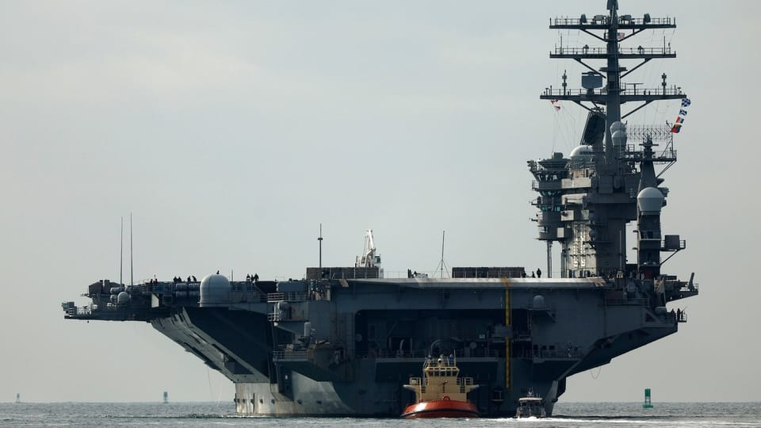

世界苦茶10月27日新闻 | 27条 | 中国公务员报考人数创历史新高

中国公务员报考人数创历史新高 | 中美经贸对谈达成初步框架 | 中国违反惯例不恭喜高市早苗 | 特朗普声称解决泰国柬埔寨问题 | 卢浮宫盗窃案嫌疑人被捕
苦茶数据
美元兑人民币：7.11（昨日7.12，前日7.12）
美元兑日元：152.98（昨日152.78，前日152.99）
上证指数：3981（昨日3950，前日3888）
标普500指数：休市（昨日6791，前日6738）
比特币：114960（昨日111704，前日111296）
布伦特原油：66.21（昨日65.94，前日65.73）
中国新闻
• 中国三公民格鲁吉亚非法买核原料铀被拘。
三名中国公民在格鲁吉亚首都第比利斯因，试图非法购买两公斤核原料铀而被捕。据格鲁吉亚国家安全局透露，疑犯计划经俄罗斯将核原料运往中国。综合路透社和《香港01》报道，格鲁吉亚国家安全局星期六指出，犯罪集团计划为这批核原料支付40万美元。嫌犯在“商讨非法交易细节”时，被确认身份并遭拘留。当局没有说明三人的犯罪动机和逮捕的具体时间，也没有透露疑犯身分。当局称，其中一名嫌犯是非法滞留格鲁吉亚的中国公民，他带领有意取得核原料的专家来到格鲁吉亚，并在全国范围内搜寻核原料，犯罪集团其他成员则在中国协调相关行动。官员指出，被拘留者将面临最高可判囚10年监禁的指控。
• 中国公务员报考人数创历史新高。
2026年中国公务员报考人数创下历史新高，争取“铁饭碗”的考生人数超过351万，同比增加近26万人，平均92人竞争一个职位。综合中新网、《北京日报》等报道，有“国考”之称的中国中央机关及直属机构考试，本轮共计划招聘3万8119人，较上年度减少1602人。报名上星期五截止前，报考总人数达351万5251人，是2020年的2.3倍，其中320万7060人通过招录单位审核。从各地报名情况来看，位于广东省的国考职位报名人数高达32万9587人，是唯一报名人数超30万的地区。首都北京的竞争难度则持续领先全国，每166名报名者中仅录取一人。竞争最激烈的前10个地区除了北京和天津，其余均位于中西部地区。
• 被郑智化批对残障人士“没人性” 深圳机场致歉。
靠轮椅代步的台湾歌手郑智化，控诉深圳机场对残障人士“最没人性”，深圳机场同日两次致歉并承诺立行立改。63岁的知名歌手郑智化上星期六在微博发文，控诉广东深圳机场“对残疾人是最没人性的”，指操纵升降车的司机不顾他的安全，冷眼看着他“连滚带爬进飞机”，引发舆论关注。同日傍晚，深圳机场先是在他的微博贴文下留言致歉，表示已就相关问题会同航空公司启动核查；随后于星期六深夜在官方微博说明具体情况，指出郑智化于星期六下午从深圳乘坐深航航班前往台北，因近机位资源饱和，航班就被安排到远机位停靠。深圳机场称安排了登机车协助坐轮椅的旅客登机，但因旅客上机和货物装载的过程中，飞机会上下移动，为防止保障设备刮碰飞机。
• 中国对日本新首相高市早苗采取冷遇。
中国对日本新任首相高市早苗冷遇 中国在高市早苗就任近一周后仍未表示祝贺，此举打破了惯例，也让人对两国关系状况感到担忧。被视为对华强硬的高市早苗，64岁，于周二就职，成为日本历史上首位女性首相，也是五年内第5位担任该职的人。她接替的是去年10月上任的石破茂，石破上任当天曾获中国国家主席习近平和国务院总理李强的祝贺。北京在2021年10月也曾在前首相岸田文雄当选时立即表示祝贺，2020年9月菅义伟就职时亦然。在周四被问及北京是否会向高市表示祝贺时，中国外交部发言人郭剑昆表示：“中国按照外交惯例作了妥善安排。” 郭剑昆补充说：“中日是近邻。中国对中日关系的基本立场是一贯和清楚的。
• 一场中国无人机竞赛揭示了北京的哪些军事野心。
聚焦无人技术显示出推动解放军进步的动力以及希望青年更加重视国防 一次全国性的无人机比赛提供了一个罕见的窗口，显示在这一前沿领域里青年参与的深度与广度，同时也反映出北京在无人技术方面寻求军事突破的努力。中国青年报周三报道说，本年度“全国青年智能无人系统应用大赛”上周在上海举行决赛，来自106所高校的200多支队伍参赛。报道指出，比赛包含了多种无人技术元素，如地面反无人机蜂群，空地协同对抗以及地空联合作战支援与运输——这些都是中国军事训练的一部分。报道称，该赛事旨在引导青年探索前沿技术，近距离了解国家安全，并推动国防教育的发展。
• 中国海军为何仍然派舰前往亚丁湾。
中国派遣编队前往印度洋深水海域训练人员、检验舰艇与装备在恶劣海况下的表现 这是中国海军在护航行动项目中派往该地区的第48支护航编队。自2008年索马里海盗大量袭击以来，该项目一直协助保护商船并打击索马里海盗。中国海军还延长了在该地区的驻留时间，从过去的四到五个月延长到前两次任务的十个月以上，原因包括外交性质的停靠增多和地区安全形势升级。专家表示，护航编队在驻留时长和作战能力上明显“演进”，亚丁湾的反海盗任务已从单一的安全响应演变为一项长期战略计划，能够将中国海军转型为在全球海域活动的现代化海上军事力量。
**• 美军一架MH-60R“海鹰”直升机和一架F/A-18F“超级大黄蜂”战斗机26日分别在南海海域相继坠机，两机机组成员均平安获救。 **
印太新闻
• 特朗普的“和平协议”能解决泰国与柬埔寨的争端吗。
唐纳德·特朗普声称他结束了另一场战争，这次是发生在7月两国在共有边界的致命冲突之后的泰国与柬埔寨之间。美国总统此行来到马来西亚首都吉隆坡，在那里他签署了两国之间的和平协定。双方同意从有争议地区撤走重型武器，并建立一个临时观察小组来进行监测——但根本性的问题仍未得到解决。
• 金正恩在东南亚交了哪些新朋友。
2025年10月26日在朝鲜劳动党80周年庆祝活动期间，金正恩会见了来访的越南和老挝领导人，并就加强关系达成共识。会有更多东南亚国家成为平壤的“新朋友”吗？最近，朝鲜劳动党举行了成立80周年的庆典，铺开红地毯迎接来自中国和俄罗斯的高级别政治人物。而来自东南亚国家越南和老挝的领导人也出席了盛大的阅兵式。越南共产党总书记苏林此次访问，是18年来越南领导人首次访问朝鲜。作为越南共产党的总书记，苏林在党内的职位相当于朝鲜领导人金正恩在朝鲜劳动党中的地位。
• 东帝汶正式加入东盟，这是该组织自1990年代以来的首次扩张。
东帝汶周日成为东南亚国家联盟的最新成员，东帝汶总理称此举是该国“梦想成真”。同时，柬埔寨与泰国签署协议，扩大停火范围，希望能促成持久和平。“今天，历史被载入史册，”在吉隆坡的一场正式仪式上，东帝汶国旗与其他10国的国旗一道被升上舞台，东帝汶总理沙纳纳·古斯芒对其他领导人表示。这是东盟自1990年代以来的首次扩员，筹备已逾十年。“对东帝汶人民来说，这不仅是一个实现的梦想，更是对我们历程的有力肯定——一个充满韧性、决心与希望的历程，”他说道。该仪式标志着东盟年度峰会的开幕，随后将进行为期两天的高层会晤，重要伙伴包括中国、日本、印度、澳大利亚、俄罗斯、韩国和美国。
科技新闻
• 研究稱AI聊天工具在新闻领域“极不靠谱”。
一项由22家国际公共广播机构联合进行的最新研究显示，像ChatGPT和Copilot这样的人工智能聊天机器人经常歪曲新闻内容，且往往无法区分事实与观点。包括德国之声在内的22家公共媒体机构进行的一项新的全面研究发现，四款最常用的人工智能助手在45%的情况下会错误地呈现新闻内容——无论何种语言或地区。来自英国广播公司和美国全国公共广播电台等多家公共广播机构的记者，对四款人工智能助手进行了评估：ChatGPT、微软Copilot、谷歌Gemini和Perplexity AI。
• 华为高层余承东增任新职务 分析：带领华为打赢AI战役。
综合《证券时报》等媒体报道，华为官网星期天更新余承东职位，显示他增任产品投资委员会主任，同时继续担任华为常务董事、终端业务董事长。华为今年9月底的内部文件则显示，余承东被任命为公司产品投资评审委员会主任，任命文件由华为创始人任正非亲自签发。公开资料显示，IRB是华为内部关键决策机构之一，主要负责公司关键技术研发方向、资源配置和重大投资评审，尤其在智能汽车、AI晶片、大模型等前沿领域承担“指挥中枢”角色。券商中国引述分析人士说法称，此次人事调整被业内视为华为强化AI战略布局。
• 美国财政部长称特朗普和习近平将于周四完成TikTok交易。
根据美国财政部长贝森特的说法，美国与中国已准备就TikTok协议推进工作。贝森特上月已表示两国在马德里会谈期间就协议达成了 “框架”，随后特朗普总统签署了促进这笔交易的行政命令。在周日早晨接受CBS采访时，贝森特表示美方与中国已就TikTok达成“最终协议”。“我们在马德里达成协议，我相信截至今日所有细节均已敲定，两位领导人将于本周四在韩国完成这笔交易，”贝森特表示。他拒绝讨论协议细节，但补充道：“我的职责是让中方同意批准这笔交易，我相信我们在过去两天里成功完成了这项任务。”
经济新闻
• 中国光伏新增装机量9月自三年低点回升。
中国今年9月太阳能光伏系统新增装机容量较8月的近三年新低略有回升，但仍远低于去年同期。中国国家能源局星期天发布今年1月至9月份全国电力工业统计数据。彭博社据此测算得出，9月光伏新增装机容量为9.66吉瓦，高于8月的7.36吉瓦，却仍远低于去年同期的20.89吉瓦。8月新增装机容量为2022年11月以来最低。彭博社指出，今年5月业者赶在政策调整前加码安装光伏板，推动新增装机容量达到92.92吉瓦的新高后，中国光伏新增装机量一直处于低位。据《证券日报》报道，国家能源局今年1月规定，5月1日前并网投产的工商业分布式项目，仍可享受全额上网补贴，此后的新项目只能选择自发自用或余电上网。
• 中美经贸对谈达成初步框架 望迎来“阶段性解决方案”。
中美元首会面在即，两国贸易代表为期一天半的经贸会谈取得积极进展。中方称就各自关切的安排“达成基本共识”，美方则形容达成“非常实质性的框架”，预计将避免美国对中国商品征收100%关税。受访学者分析，中美双方酝酿之中的协议与“第一阶段贸易协议”思路类似，预计将在中国国家主席习近平与美国总统特朗普会晤时最终敲定，也意味着中美贸易战有望迎来“阶段性解决方案”。过去的周末，中美贸易代表在马来西亚首都吉隆坡，举行自5月以来的第五轮面对面经贸对谈。据彭博社等报道，美国财政部长贝森特星期天上午在会谈结束后称，双方讨论了农业采购、TikTok、芬太尼、贸易、稀土，以及整体双边关系等议题。
• 美中表示贸易谈判顺利，贝森特称中国同意延迟稀土管制一年。
据华尔街日报，中美高级谈判代表在周末贸易谈判后释放积极信号，称双方进行了“建设性讨论”，为本周即将举行的特朗普习近平会晤铺平道路。“我认为我们已经为两位领导人周四的会谈建立了非常成功的框架。”美国财政部长贝森特在马来西亚首都结束为期两天的贸易谈判后表示。中国商务部副部长李成钢则在另一场记者会上表示，“双方就可能的解决方案达成了初步共识”。据贝森特和李成钢介绍，谈判涵盖多个议题，包括出口管制、延长相互关税暂停期限、合作打击芬太尼非法贸易等。贝森特说，双方还讨论了农业产品采购、用于制造汽车和战斗机的关键稀土供应、TikTok问题以及中美整体关系。
• 今年首九个月日本对华投资大增逾55％。
中国官方数据显示，今年首九个月日本对华投资大增逾55％。中国商务部星期六公布的数据显示，今年1月至9月，全国实际使用外资金额同比下降10.4%，持续两位数下滑，但跌幅有所收窄。9月当月实际使用外资同比增长11.2%。从投资来源地看，今年首九个月日本、阿联酋、英国和瑞士实际对华投资分别增长55.5%、48.7%、21.1%和19.7%。日本媒体NetIB-News新闻网分析，今年来日本对华投资增长主要原因在于两国关系回暖。由于中日均面临美国关税压力，两国趋向通过加强经贸合作应对风险。但报道也指出，随着被视为对华鸽派的日本前首相石破茂辞任，新一届日本政府可能对中日贸易关系产生重大影响。
• 中荷就芯片制造商Nexperia的争端威胁到汽车行业的供应链。
恩智浦危机：围绕这家芯片制造商的中荷争端令汽车产业供应链面临风险。所有目光都聚焦于中国商务部长王文涛在布鲁塞尔与欧盟同行会晤，期望化解围绕恩智浦的争端。荷兰日报《德尔夫特人报》例如刊登了更多本地新闻，包括一家社区“大麻咖啡店”发生爆炸的报道。“我知道这事发生了，但我不认为这是城里人人谈论的话题，”奈梅亨一位名叫丽莎的当地居民说。奈梅亨2025年估计人口为189,007人。荷兰对恩智浦的行动发生在美国政府将出口管制扩大到至少由美国贸易黑名单上的公司持股50%的实体之后一天。因被被列入黑名单的闻泰科技全资拥有，恩智浦因此成为美国制裁对象。
• 苹果准备在印度生产更多AirPods耳机。
据《印度经济时报》报道，富士康位于印度海得拉巴的工厂正准备将 AirPods 月产量提升一倍，并使其员工数量增加超过一倍，因为苹果正在加速在该国的配件生产。富士康显然将通过改造五条现有装配线并安装从越南工厂转移的额外设备，将其Kongara Kalan的月产能从超过10万副提升至20万副。在机械和工装搬迁后，该工厂于今年四月份开始了 AirPods 的生产。目前大约2000名员工的规模也可能在接下来六到八个月内增至5000人。该工厂目前的装配组合包括AirPods 4和AirPods Pro 3。在印度扩大AirPods生产是苹果供应链更广泛战略生产转移的一部分，因其正在不同国家间分散其制造布局。
俄乌战争
• 美国一家小枪店拿到了乌克兰10亿美元的采购合同和千万欧元预付款。
金融时报报道，2022年，亚利桑那州南部一个商场内不起眼的枪械店拿到了一笔大单，为乌克兰提供价值10亿美元的弹药。这份秘密合同来自乌克兰的一家军火机构，涉及数量庞大的火箭弹和炮弹，账面价值甚至超过当时爱沙尼亚一年的国防预算。但这家名为OTL Firearms的零售商，只在图森市郊一个满是尘土的单层建筑中运营，既没有出口记录，也没有大型仓库，更没有承接国家级订单的能力。乌克兰预先汇出1700万欧元，却连一发子弹都没有收到，当时OTL的老板年仅30岁。《金融时报》披露，乌克兰在军备采购上浪费了数亿美元，这笔预付款只是其中一部分。
• 俄罗斯用无人机袭击基辅，造成3人死亡、29人受伤。
俄罗斯用无人机袭击基辅，造成3人死亡、29人受伤 基辅，乌克兰 — 当局周日凌晨表示，俄罗斯用无人机袭击了乌克兰首都，造成三人在家中遇难。至少29人受伤，其中7名为儿童，这是连续第二个夜间对基辅造成平民伤亡的袭击。乌克兰内政部长伊霍尔·克利缅科表示，遇难者中有一名19岁女子和她46岁的母亲。俄罗斯无人机在首都德斯尼安斯基区引发两栋住宅楼着火。救援人员从一栋九层楼和一栋十六层楼撤离居民，扑灭火焰并清理瓦砾。74岁的奥尔哈·叶夫亨尼夫娜说，火灾产生的浓烟太大，导致她无法离开公寓。“直到现在我们的窗户仍被烟熏得一片漆黑，根本无法下楼，所以我们在门和阳台上盖了湿毯子，”她说。
世界新闻
• 埃及与红十字会加入在加沙搜寻人质遗体。
以色列当局证实，埃及和国际红十字委员会的队伍已获准在加沙搜寻在10月7日袭击中被劫持后遇难的人质遗体。以色列政府表示，这些队伍已被允许在以色列国防军控制的加沙地区越过所谓的“黄色线”进行搜寻。另据周日报道，哈马斯成员也被允许进入以军控制的加沙区域，与国际红十字委员会队伍一道协助搜寻。根据美国斡旋的停火协议第一阶段，哈马斯已移交28名遇难以色列人质中的15具遗体，该协议要求其交出全部人质遗体。哈马斯表示正与埃及当局协调。唐纳德·特朗普警告哈马斯“要迅速归还遗体，否则参与这项伟大和平的其他国家将采取行动”。以色列一位发言人称，埃及队伍已被允许与国际红十字委员会合作定位遗体。
• 特朗普政府发布通知称11月1日不会发放任何联邦食品援助。
特朗普政府发布通知称11月1日不会发放联邦食品救助 特朗普政府发布通知称11月1日不会发放联邦食品救助 美国农业部在其网站上发布通知称，联邦食品救助将在11月1日不会发放，这在政府停摆持续的情况下加剧了对全国家庭的影响。该新通知是在特朗普政府表示不会动用约50亿美元的应急资金以维持补充营养援助计划在11月继续发放之后发布的。该计划帮助大约每八个美国人中就有一人购买食品。“归根结底，水源已经枯竭，”农业部的通知写道。“在此时点，2023年11月01日将不会发放任何福利。我们正接近参议院民主党人的一个拐点。” 始于10月1日的停摆现在成为有记录以来第二长的停摆。
• 加州州长纽森称正在认真考虑是否竞选总统。
特朗普最明显的政治对手，加州民主党州长纽森在接受CBS新闻采访时表示，将在2026年中期选举后考虑是否竞选总统。主持人问他，在明年中期选举结束后，是否会“认真考虑”参选白宫。“是的，否则我就是在撒谎。”纽森回答说，“那就是在撒谎。我不能那样做。” 纽森的州长任期将在2027年1月结束，由于任期限制，他不能再次参选。他提醒说，做出任何最终决定都还很遥远。当被问及是否正逐步找到竞选全国公职的理由时，纽森回答：“命运会决定这一切。” 58岁的纽森曾多次访问关键摇摆州。今年7月，他前往南卡罗来纳州——目前计划举办2028年总统选举的首场民主党初选，虽然这一安排仍可能改变。
• 法国：卢浮宫珠宝盗窃案嫌疑人被捕。
犯罪法国 法国：卢浮宫珠宝盗窃案嫌疑人被捕 2025年10月26日巴黎检察官表示，涉嫌参与卢浮宫博物馆贵重珠宝盗窃案的人员已被逮捕。卢浮宫已于周三重新向公众开放，但阿波罗画廊仍暂时关闭。广告 上周日发生的卢浮宫珍宝盗窃案引发全球关注。本周日，巴黎检察官贝库证实了此前媒体的报道，确认警方已经逮捕了相关嫌疑人。这位检察官未透露具体被捕人数，但此前媒体称有两名男子被拘留。贝库对案件信息提前泄露表示遗憾，称这可能会妨碍众多调查人员“追回被盗珠宝并逮捕所有涉案人员”的工作。她表示，侦探们通过公共和私人监控摄像头，成功追踪到嫌疑人在巴黎及周边地区的行踪。
• 特朗普推动的选区重划在印第安纳州和堪萨斯州遇阻，因共和党议员抵制。
在唐纳德·特朗普总统第二任期的大部分时间里，共和党人都屈从于他的意志。但在两个人口中西部州，特朗普为在明年选举中保住众议院控制权、让共和党人重新划定国会选区的计划遭遇了阻碍。尽管白宫进行了数周的游说，印第安纳州和堪萨斯州的共和党人表示，他们在通过新的、更有利于共和党的选区图方面没有足够票数。这使得这两州在重划选区的热潮中成为例外：在这些地方，共和党占多数的州议会不愿或无法响应特朗普的号召，帮助保住该党在国会山的控制权。两州的立法者仍可能被说服，而白宫的推动也在继续，行动包括邀请印第安纳州议员到白宫椭圆办公室会面。
• 库尔德叛军组织库尔德工人党表示正将其战斗人员从土耳其撤回至伊拉克。
周日，一支库尔德武装组织宣布，作为与土耳其政府和平努力的一部分，正在把其战斗人员从土耳其撤回到伊拉克。该声明由库尔德工人党在伊拉克北部发布，此前数月曾举行象征性解除武装仪式，一批战士开始放下武器以示对和平进程的承诺。该组织自20世纪80年代以来在土耳其发动了持续数十年的叛乱，已造成数以万计的死亡。在新闻发布会上，库尔德伞状组织库尔德斯坦社区联盟成员萨布里·奥克表示，所有在土耳其的PKK部队正被撤回到伊拉克北部的地区，“以避免冲突或挑衅”。奥克在土耳其语宣读的声明称。